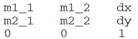
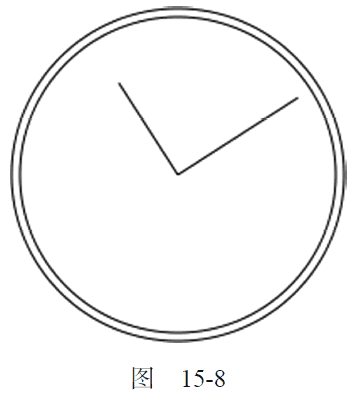

15.2.5 变换
通过上下文的变换，可以把处理后的图像绘制到画布上。2D 绘制上下文支持各种基本的绘制变换。创建绘制上下文时，会以默认值初始化变换矩阵，在默认的变换矩阵下，所有处理都按描述直接绘制。为绘制上下文应用变换，会导致使用不同的变换矩阵应用处理，从而产生不同的结果。可以通过如下方法来修改变换矩阵。
-
rotate(angle)：围绕原点旋转图像angle 弧度。
-
scale(scaleX, scaleY)：缩放图像，在x 方向乘以scaleX，在y 方向乘以scaleY。scaleX和scaleY 的默认值都是1.0。
-
translate(x, y)：将坐标原点移动到(x,y)。执行这个变换之后，坐标(0,0)会变成之前由(x,y)表示的点。
-
transform(m1_1, m1_2, m2_1, m2_2, dx, dy)：直接修改变换矩阵，方式是乘以如下矩阵。

-
setTransform(m1_1, m1_2, m2_1, m2_2, dx, dy)：将变换矩阵重置为默认状态，然后再调用transform()。
变换有可能很简单，但也可能很复杂，这都要视情况而定。比如，就拿前面例子中绘制表针来说，如果把原点变换到表盘的中心，然后再绘制表针就容易多了。请看下面的例子。
var drawing = document.getElementById("drawing");
//确定浏览器支持<canvas>元素
if (drawing.getContext) {图15 - 7
var context = drawing.getContext("2d");
//开始路径
context.beginPath();
//绘制外圆
context.arc(100, 100, 99, 0, 2 * Math.PI, false);
//绘制内圆
context.moveTo(194, 100);
context.arc(100, 100, 94, 0, 2 * Math.PI, false);
//变换原点
context.translate(100, 100);
//绘制分针
context.moveTo(0, 0);
context.lineTo(0, -85);
//绘制时针
context.moveTo(0, 0);
context.lineTo( - 65, 0);
//描边路径
context.stroke();
}
运行一下
把原点变换到时钟表盘的中心点(100,100)后，在同一方向上绘制线条就变成了简单的数学问题了。
所有数学计算都基于(0,0)，而不是(100,100)。还可以更进一步，像下面这样使用rotate()方法旋转时钟的表针。
var drawing = document.getElementById("drawing");
//确定浏览器支持<canvas>元素
if (drawing.getContext) {
var context = drawing.getContext("2d");
//开始路径
context.beginPath();
//绘制外圆
context.arc(100, 100, 99, 0, 2 * Math.PI, false);
//绘制内圆
context.moveTo(194, 100);
context.arc(100, 100, 94, 0, 2 * Math.PI, false);
//变换原点
context.translate(100, 100);
//旋转表针
context.rotate(1);
//绘制分针
context.moveTo(0, 0);
context.lineTo(0, -85);
//绘制时针
context.moveTo(0, 0);
context.lineTo( - 65, 0);
//描边路径
context.stroke();
}
运行一下
因为原点已经变换到了时钟表盘的中心点，所以旋转也是以该点为圆心的。结果就像是表针真地被固定在表盘中心一样，然后向右旋转了一定角度。结果如图15-8 所示。

无论是刚才执行的变换，还是fillStyle、strokeStyle 等属性，都会在当前上下文中一直有效，除非再对上下文进行什么修改。虽然没有什么办法把上下文中的一切都重置回默认值，但有两个方法可以跟踪上下文的状态变化。如果你知道将来还要返回某组属性与变换的组合，可以调用save()方法。
调用这个方法后，当时的所有设置都会进入一个栈结构，得以妥善保管。然后可以对上下文进行其他修改。等想要回到之前保存的设置时，可以调用restore()方法，在保存设置的栈结构中向前返回一级，恢复之前的状态。连续调用save()可以把更多设置保存到栈结构中，之后再连续调用restore()则可以一级一级返回。下面来看一个例子。
context.fillStyle = "#ff0000";
context.save();
context.fillStyle = "#00ff00";
context.translate(100, 100);
context.save();
context.fillStyle = "#0000ff";
context.fillRect(0, 0, 100, 200); //从点(100,100)开始绘制蓝色矩形
context.restore();
context.fillRect(10, 10, 100, 200); //从点(110,110)开始绘制绿色矩形
context.restore();
context.fillRect(0, 0, 100, 200); //从点(0,0)开始绘制红色矩形
运行一下
首先，将fillStyle 设置为红色，并调用save()保存上下文状态。接下来，把fillStyle 修改为绿色，把坐标原点变换到(100,100)，再调用save()保存上下文状态。然后，把fillStyle 修改为蓝色并绘制蓝色的矩形。因为此时的坐标原点已经变了，所以矩形的左上角坐标实际上是(100,100)。然后调用restore()，之后fillStyle 变回了绿色，因而第二个矩形就是绿色。之所以第二个矩形的起点坐标是(110,110)，是因为坐标位置的变换仍然起作用。再调用一次restore()，变换就被取消了，而fillStyle 也返回了红色。所以最后一个矩形是红色的，而且绘制的起点是(0,0)。
需要注意的是，save()方法保存的只是对绘图上下文的设置和变换，不会保存绘图上下文的内容。